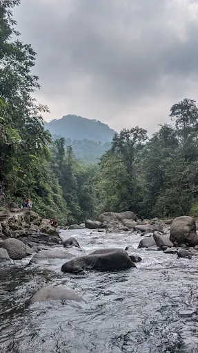

Petungkriyono sering dijuluki hutan hujan tropis
Hutan hujan tropis berperan penting dalam menjaga keseimbangan ekosistem, terutama sebagai rumah bagi keanekaragaman hayati, sumber makanan, dan penyerap emisi karbon. Salah satu hutan hujan tropis yang masih terjaga di Indonesia adalah Hutan Petungkriyono. Didukung dengan pemandangan yang indah serta budaya masyarakat lokal yang menarik, Petungkriyono menjadi objek wisata yang diminati oleh berbagai kalangan. Untuk menjaga kelestarian Hutan Petungkriyono serta meningkatkan kesadaran masyarakat akan pentingnya hidup berdampingan dengan hutan serta keanekaragaman hayati di dalamnya, Genau Indonesia berinisiatif menyediakan layanan pariwisata berkelanjutan melalui edukasi dan pemberdayaan masyarakat lokal.
